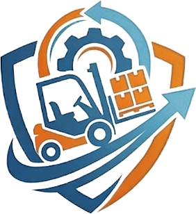

Zugang wird geprüft…

ProDrive Akademie Niederbayern
Allgemeine Ausbildung Stufe 1 · DGUV Grundsatz 308-001
☰ Kapitel
‹ Zurück
Weiter ›
💬 WhatsApp
✉️ E-Mail
← Zurück zur Startseite
📋 Kapitelübersicht
✕
→ Weiter lernen